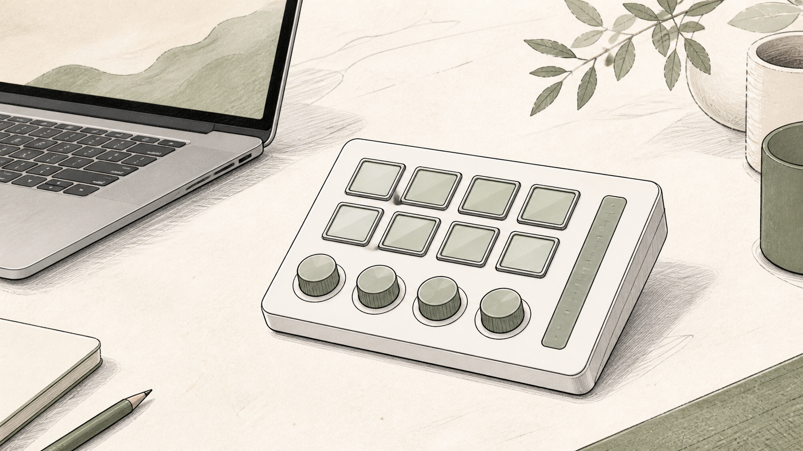

MAC WORKFLOW / CONTROL
Stream Deck +をMac作業に置く前に。キーとダイヤルの使い分け
広告：本ページにはAmazonアソシエイトリンクが含まれます。商品情報は公式情報とAmazon掲載情報を確認して作成しています。実機での検証結果ではありません。

Elgato Stream Deck +のキー、ダイヤル、プロファイルを公式情報から整理し、Mac作業に必要か判断するガイドです。スペックの多さではなく、先に用途と設置条件を決めてから判断します。

公式仕様から先に確認すること
Stream Deck +はキーとダイヤルを組み合わせ、アプリごとのプロファイルで操作を切り替えられます。公式の技術仕様と対応ソフトを、自分の反復作業と照合します。
- 使う機器と必要な規格を先に書き出す
- 設置場所と交換・清掃・持ち出しの動線を測る
- 公式の対応条件を自分の機器の仕様と照合する
使い方と設置を分けて考える
毎日繰り返す操作を3つだけ書き出し、キーに割り当てる操作とダイヤルで連続調整する操作を分けます。置き場所は手を伸ばす距離とケーブルの取り回しで決めます。
毎日使う機能と、たまに使う機能を分けると、購入後の運用が具体的になります。使わない機能のために設置や管理を増やさないことも、購入判断の一部です。
向く条件・見送る条件
向く条件
- 公式仕様のうち、必要な機能が具体的な作業に直結している
- 設置・交換・保守の動線を確保できる
- 現在の機器と接続条件を照合できている
見送る条件
- 数字や機能の多さだけで選び、用途がまだ決まっていない
- 設置場所や周辺スペースを測っていない
- 対応条件を確認せず、購入後に解決しようとしている
迷う場合は用途を一つに絞り、必要な仕様が一つでも欠けるかを確認してから判断してください。関連するGearline Labの記事一覧も比較材料になります。
根拠と商品情報